OIDC
Finance
Denied
Requires Finance.User
Identity engineering / Project case study
An HR-driven identity lab connecting three department applications to Microsoft Entra ID. Follow an employee from onboarding to transfer to departure, and see why signing in is only the beginning.
Interactive demonstration
Try each lifecycle action, then check a department dashboard. This is a browser-only simulation: it makes no Entra requests, creates no accounts and stores no personal data.
HR / Fictional employee
Lifecycle actions model an authorized HR administrator. Application checks model the employee.
OIDC
Denied
Requires Finance.User
OIDC
Denied
Requires Sales.User
SAML
Denied
Requires Marketing.User
Jordan has no account or department access yet.
System architecture
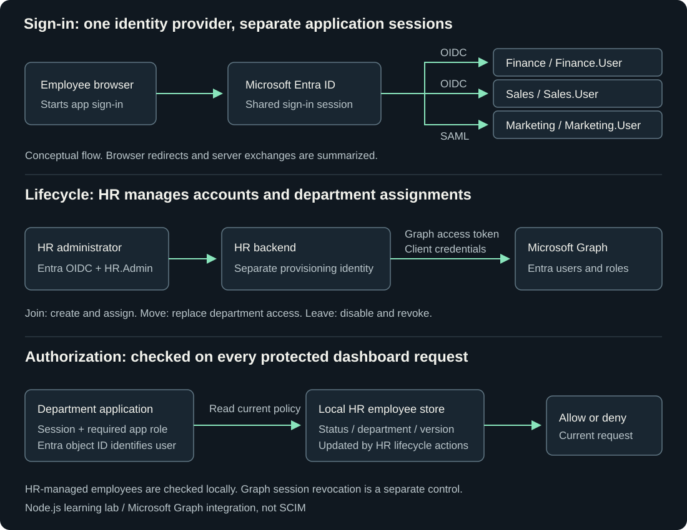
Real lab evidence / 26 November 2026
These are screenshots from my local applications and Entra test tenant. Michael Larbi is a fictional lab employee. Select any image to inspect the original at full size.
Joiner
I onboarded fictional employee Michael Larbi into Finance, checked his Entra assignment, then tested both permitted and denied access.
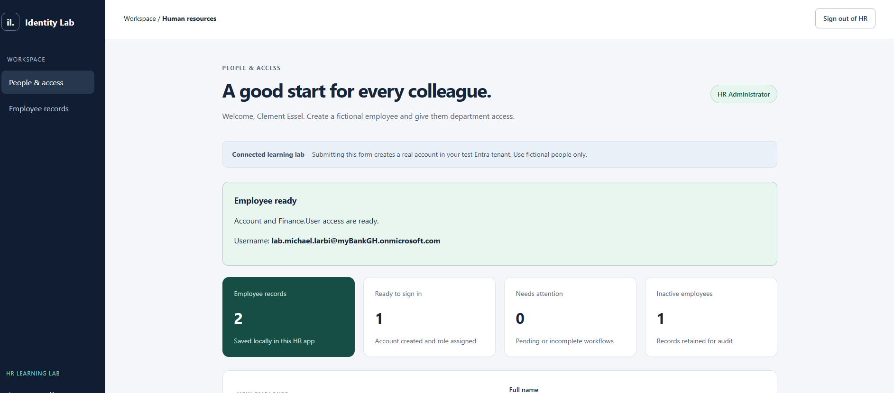
The HR application reports that Michael's account and Finance.User access are ready.
View full-size screenshot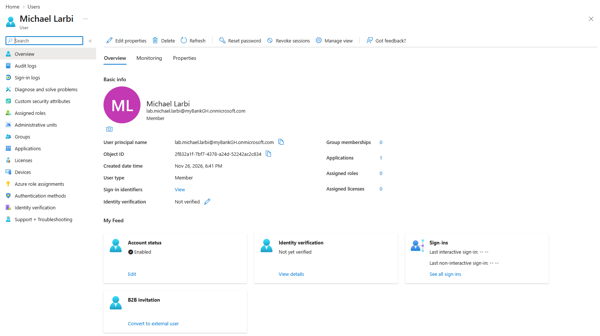
Michael's user overview shows an enabled account and one application assignment.
View full-size screenshot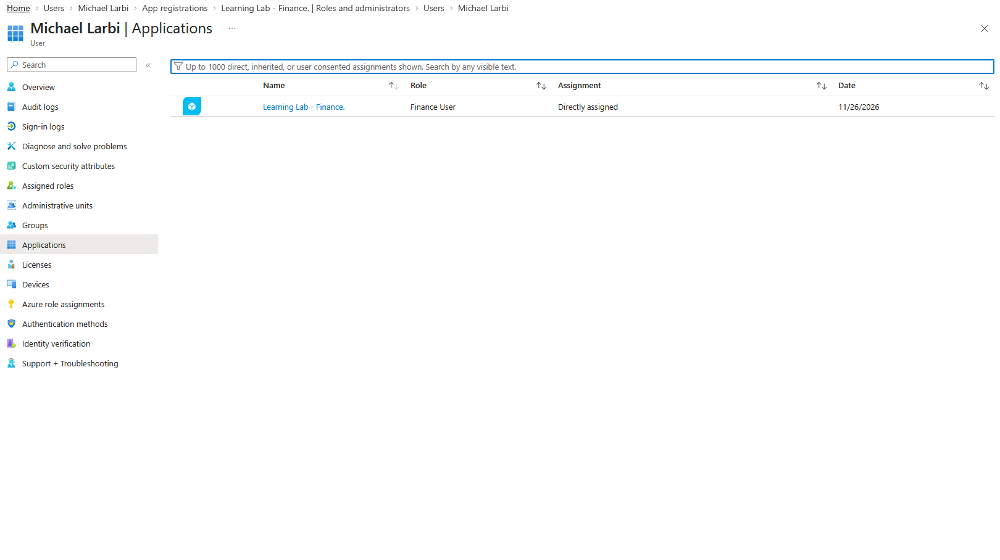
Entra lists Learning Lab - Finance with the Finance User role directly assigned to Michael.
View full-size screenshot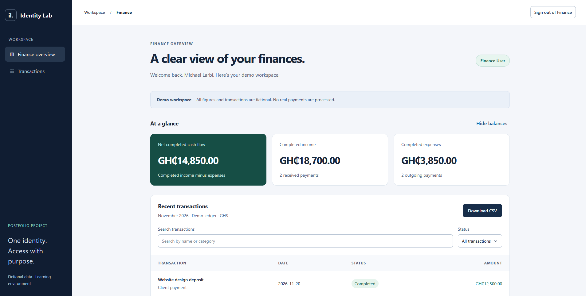
The Finance dashboard displays Michael's name and the Finance User badge.
View full-size screenshot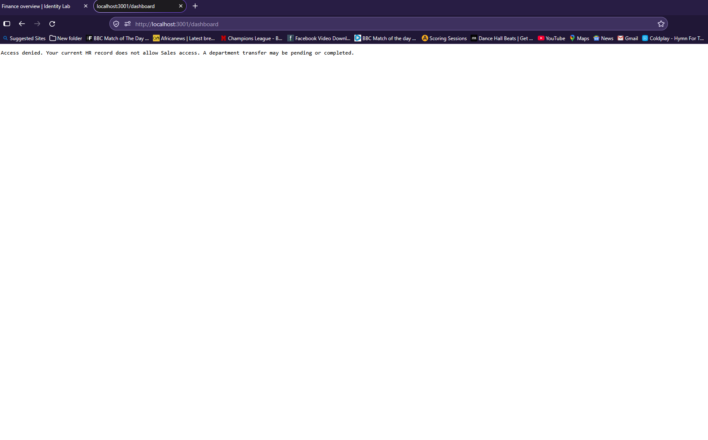
The Sales dashboard denies the request because the current HR record does not permit Sales. This is an HR policy denial, not a screenshot of a missing-role error.
View full-size screenshotMover
I transferred Michael to Sales through HR, refreshed his existing Finance session, then signed into Sales again.
HR reports that Michael moved from Finance to Sales and must sign in again to use the new access.
View full-size screenshot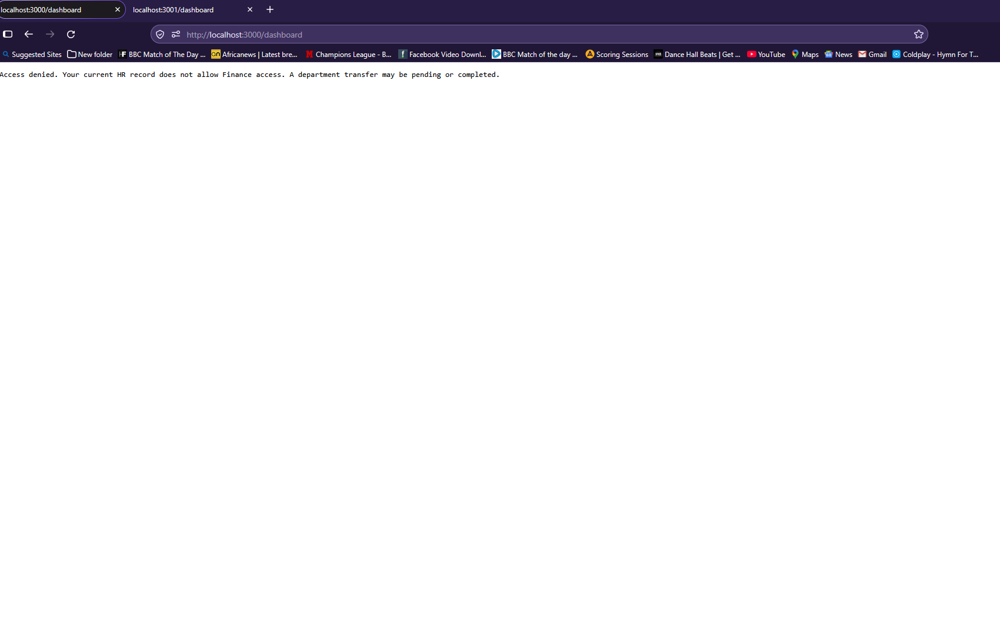
Refreshing the existing Finance tab returns an HR policy denial. The previous session does not override the changed department.
View full-size screenshot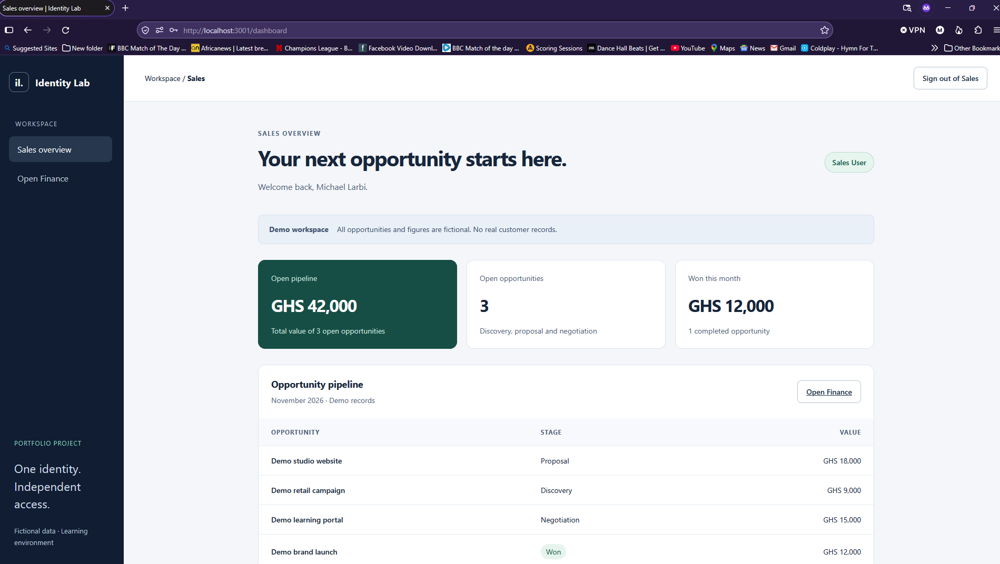
The Sales dashboard displays Michael's name and the Sales User badge.
View full-size screenshotLeaver
I deactivated Michael through HR, refreshed the Sales session without signing out, and checked the account status in Entra.
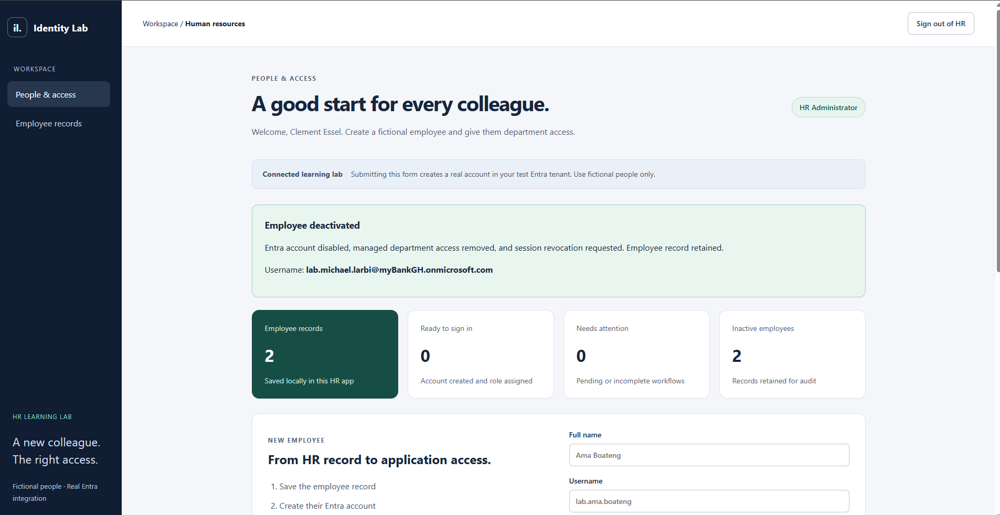
HR reports account disabling, managed department-access removal and a session-revocation request. The employee record is retained.
View full-size screenshot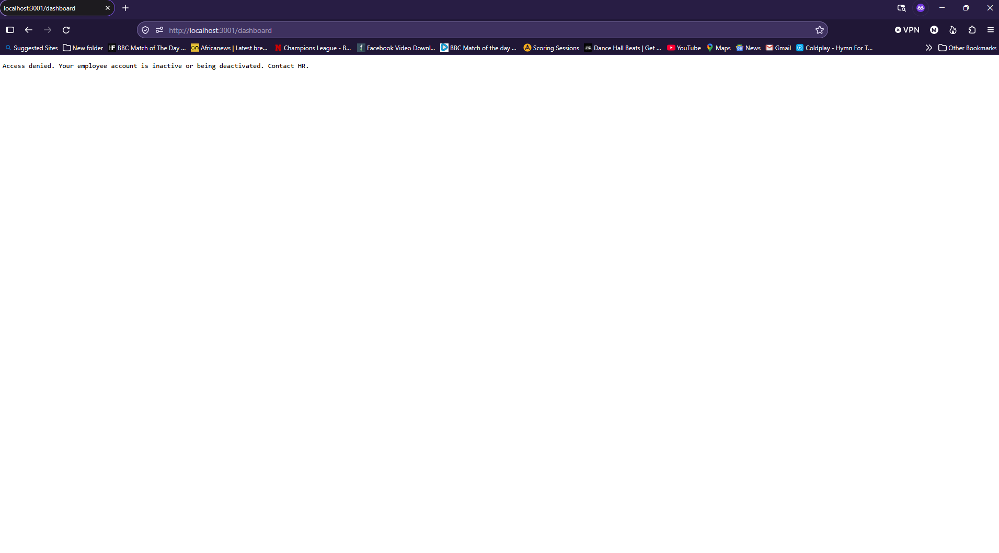
Sales rejects the protected request because the employee is inactive or being deactivated. The local HR policy enforces this application block.
View full-size screenshot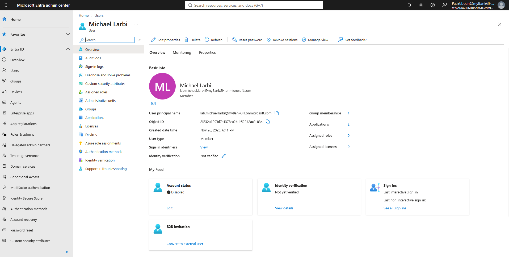
Michael's account status is Disabled. The overview still shows two applications and one group membership, so this image does not establish that all assignments were removed.
View full-size screenshotFinance and Sales use OIDC, while Marketing uses SAML. Each app establishes its own session and requires an application role. HR uses a separate provisioning identity and OAuth 2.0 client credentials to call Microsoft Graph, not SCIM.
For HR-managed employees, each protected dashboard request checks the local employee status, department and access version using the Entra object ID. Transfers and deactivation persist a local block before remote changes, with checkpoints for retries.
These screenshots document visible outcomes. They do not independently prove every backend operation, SSO across protocols, MFA enforcement or immediate invalidation of every Entra token.
Verification / 26 November 2026
All passed with zero failures or skipped tests. The suite covers onboarding, transfers, deactivation, authorization, interrupted operations, throttling and reconciliation after lost responses.
Tests use synthetic records and fake Graph responses. They do not prove live tenant configuration.
During the build, I tested sign-in across OIDC and SAML, department denials, onboarding, transfer and deactivation. These observations are documented separately from the automated tests.
The screenshot walkthrough documents Michael Larbi's onboarding, department transfer and deactivation. Cross-protocol SSO remains a reported lab observation without a recording. The interactive demo is a separate simulation.
This is a same-computer learning lab with JSON persistence and in-memory application sessions. It is not a production identity platform. Manual directory changes are not continuously reconciled, and manually created users are outside the HR lifecycle.
MFA and Conditional Access testing for this project are pending. Durable storage, production HTTPS, secret management, background processing and operational monitoring are future work. Already displayed or downloaded content cannot be recalled.